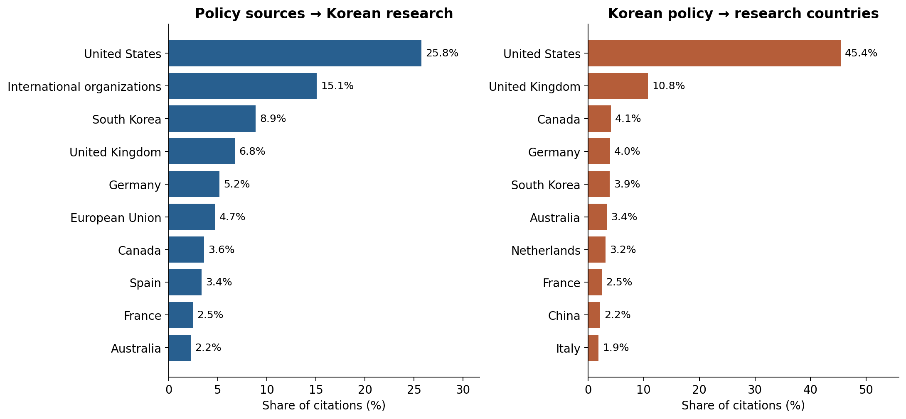
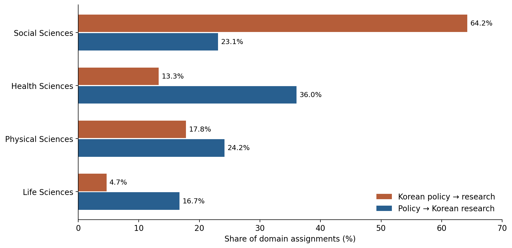
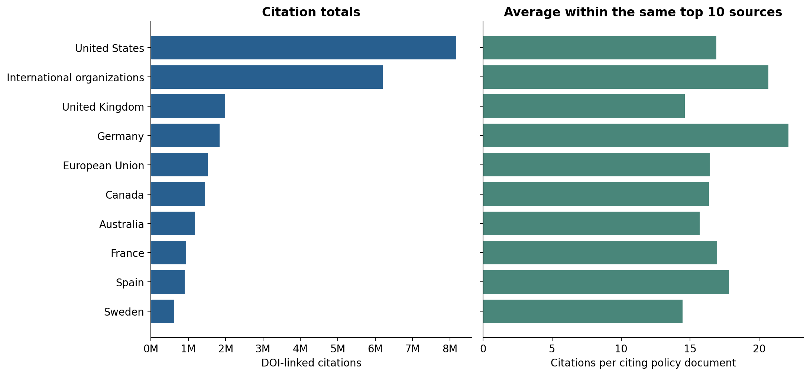
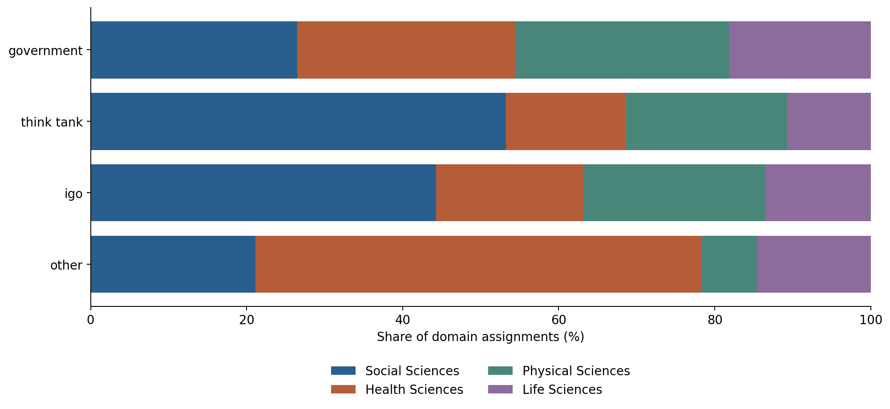
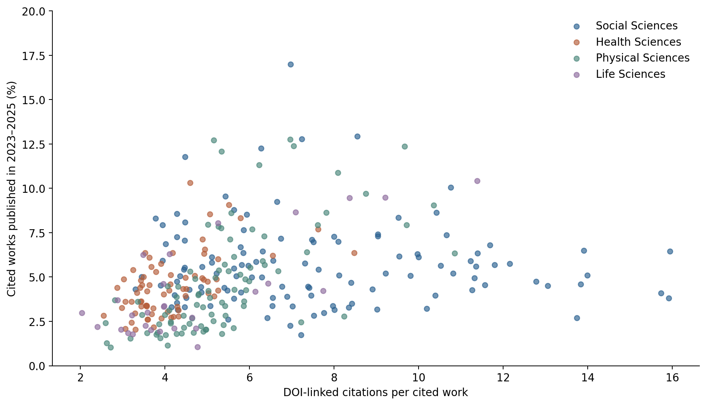
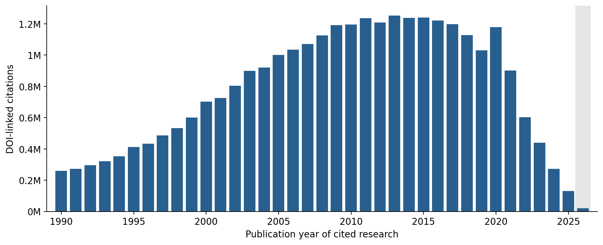

October 2026 Data Update
English baseline summary · Full Korean update · 2025 Korean report PDF
Updated: 8 October 2026 · Overton: 2026-10-04 · OpenAlex: 2026-06-25
This page reports the new online analysis. The linked report PDF and the other methods, appendix and interactive pages describe the 2025 baseline edition. The analysis covers observed DOI-linked policy-document → research citations, restricted to DOIs mapping to one OpenAlex work.
Korea’s two citation directions
The top three policy-source categories account for 49.7% of source-tagged citations to Korean research. Among citations from Korean policy documents with an assigned research country, U.S. research accounts for 45.4% and Korean research for 3.9%. These percentages describe different populations and directions.
| Indicator | Updated value |
|---|---|
| Unique policy-document/work pairs | 31,940,050 |
| Citing policy documents | 1,870,148 |
| Cited unique works | 8,281,510 |
| Citations from Korean policy documents | 418,179 |
| Research-country missingness in Korean policy citations | 26.1% |
| Social sciences: Korean policy → research | 64.2% |
| Social sciences: policy → Korean research | 23.1% |
| Health sciences: Korean policy → research | 13.3% |
| Health sciences: policy → Korean research | 36.0% |
| KDI/KIEP share of citations from Korean policy documents | 5.2% |
| Cited works appearing in at least two different policy documents | 50.4% |


Domain weighting sensitivity
| Weighting | Korean policy → research % | Policy → Korean research % | Social-science gap, pp |
|---|---|---|---|
| Citation-domain (primary) | 64.2 | 23.1 | 41.1 |
| Unique work-domain | 60.8 | 16.8 | 44.0 |
| Equal policy-document weight | 67.6 | 34.7 | 32.9 |
| Fractional citation-domain | 71.2 | 24.6 | 46.6 |
Both share columns refer to social sciences. Document-equal weighting averages each document’s social-science share of full domain assignments, among documents with domains. Distinct-work weighting counts each work/domain once within each direction. Fractional weighting splits a citation’s unit weight across its assigned domains. The gap remains positive across all four definitions, ranging from 32.9 to 46.6 percentage points; this is a range across definitions, not a confidence interval.
Institutions and source-group composition
| Institution | Citation pairs | Citing documents | Social sciences % |
|---|---|---|---|
| Korea Institute for Health and Social Affairs | 64,140 | 3,589 | 56.6 |
| Science and Technology Policy Institute | 28,609 | 2,153 | 72.2 |
| Korean Institute of Criminology and Justice | 28,127 | 1,636 | 67.6 |
| Korea Institute of Public Administration | 24,008 | 1,669 | 74.6 |
| Korea Institute for Industrial Economics & Trade | 23,046 | 2,139 | 82.6 |
| Korea Environment Institute | 21,378 | 1,647 | 25.5 |
| Korea Research Institute for Human Settlements | 19,426 | 2,114 | 59.0 |
| Korea Institute for National Unification | 18,264 | 1,433 | 84.1 |
| Korea Development Institute | 17,794 | 1,220 | 81.1 |
| Korea Labour Institute | 16,129 | 1,044 | 75.6 |
| Korea Institute for International Economic Policy | 4,003 | 306 | 85.9 |
These are the ten largest Korean institutions by citation count plus KDI/KIEP. Social-science shares use full domain assignments within institutions. Original names and identifiers remain in the downloadable aggregates.
| Direction | Source group | Group weight % | Within-group social sciences % |
|---|---|---|---|
| Korean policy → research | Other sources | 4.7 | 49.7 |
| Korean policy → research | Think tank | 95.3 | 64.9 |
| Policy → Korean research | Other sources | 80.8 | 17.6 |
| Policy → Korean research | Think tank | 19.2 | 46.1 |
Documents with any top-level think-tank tag form one exclusive group; all remaining documents, including unassigned types, form the other. There are 0 type-unassigned citation pairs in these two directions. Group weights use domain assignments. A symmetric descriptive decomposition of the 41.1 pp social-science gap attributes 16.6 pp to the source-group composition term and 24.5 pp to the within-group share term. This is an arithmetic decomposition, not a causal attribution. The terms are respectively the sum of group-weight differences times mean within-group shares, and within-group share differences times mean group weights across the two directions. Group-level decomposition.
Baseline comparison and common institutions
| Indicator | 2025 baseline | October 2026 |
|---|---|---|
| Korean policy citation pairs | 32,935 | 418,179 |
| Korean citing policy documents | 2,726 | 35,335 |
| U.S. share; research country known | 55.2 | 45.4 |
| Research country unassigned | 27.3 | 26.1 |
| Social sciences; Korean policy → research | 77.9 | 64.2 |
| Social sciences; policy → Korean research | 23.1 | 23.1 |
| KDI/KIEP citation share | 93.5 | 5.2 |
Percent indicators are on a 0–100 scale. The baseline uses Overton February 2025 and OpenAlex June 2025, the existing DOI matching input, ROR with raw-affiliation country fallback, full domain assignments and a 2022–2024 recent-work window. The latest uses the snapshots above, freshly normalized DOI matching excluding multi-work matches, ROR with single-institution-country fallback, full domain assignments and a 2023–2025 recent-work window. Expected shares are omitted from this comparison because the population and weighting were refined here.
Exact source identifiers intersect in 9 institutions. The following rows all use the latest snapshot, comparing its full Korean source sample with restrictions to common institutions and to policy documents published in 2010–2024.
| Latest-snapshot scope | Citation pairs | Social sciences % | U.S. research % | KDI/KIEP % |
|---|---|---|---|---|
| All latest Korean sources | 418,179 | 64.2 | 45.4 | 5.2 |
| Institutions present in both editions | 38,594 | 67.6 | 51.5 | 56.5 |
| Common institutions; policy years 2010–2024 | 28,696 | 66.5 | 49.3 | 54.1 |
Social-science shares use domain assignments, U.S. shares country-known citations, and KDI/KIEP shares all citations in each scope. Restricting institutions does not fix document identity, DOI mapping or OpenAlex metadata. Renamed identifiers are not inferred. These are coverage comparisons, not estimates of behavioral change. Institution-ID crosswalk.
Data linkage and comparability
- 8,386,474 of 8,767,042 unique DOIs match OpenAlex. The 104,964 DOIs mapping to multiple work IDs are excluded from the primary analysis; an unrestricted-mapping sensitivity table is available.
- First-author country uses the mode of ROR country codes by affiliation-row frequency, with alphabetical ties. If unavailable, a single unambiguous OpenAlex institution country code is accepted. Unresolved works remain unassigned.
- The 2025 baseline used a different fallback field. Snapshot coverage, DOI disambiguation and the fallback field all changed, so differences from the baseline must not be interpreted directly as behavioral trends.
- The recent-work window is 2023–2025 among works with a known publication year up to 2025. Incomplete 2026 is excluded. This differs from the baseline’s 2022–2024 window.
- Policy-source tags may overlap; citation counts do not measure causal policy impact.
Interactive figures and downloads
Policy-source totals and averages

Domains by source type

Topic metrics

Publication years

Public aggregates and source code · Data profile · DOI audit · Domain aggregates · Country sensitivity · Weighting sensitivity · Institution domains · Source groups · Edition comparison · Common-institution scopes · Provenance
See the full Korean update for institution tables, source totals and averages, publication-year distributions and follow-up questions.